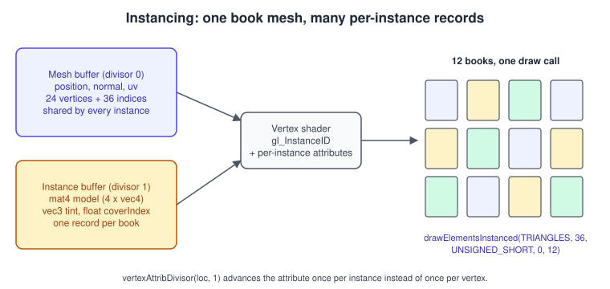
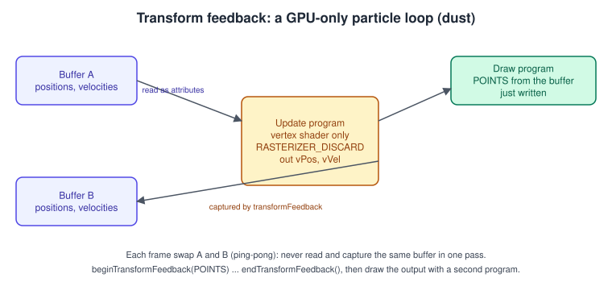
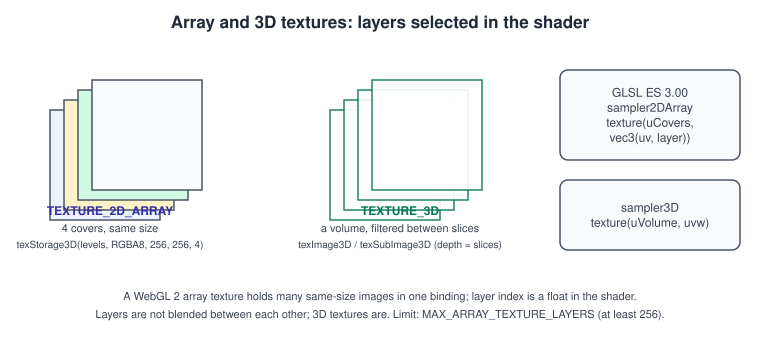
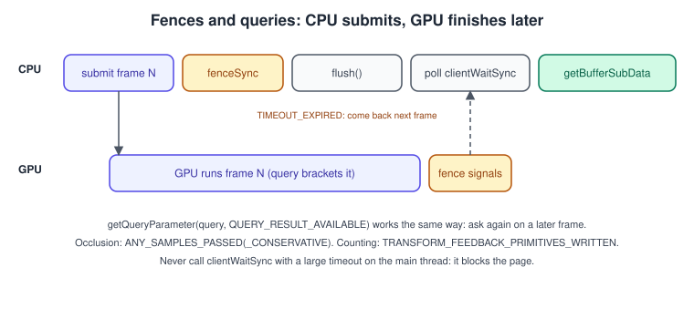

WebGL 2 Advanced Features
|
This content was generated with the assistance of AI and should be verified against the official documentation before being relied on in production. |
WebGL 1 gave the browser the OpenGL ES 2.0 feature set. WebGL 2 is derived from OpenGL ES 3.0 and moved a long list of things that used to be optional extensions into the core, and added others that
did not exist at all. Some of them (vertex array objects, uniform buffers, texStorage, framebuffer blits) are covered on the pages of the concept they belong to. This page collects the rest: the features that change how
you structure a scene or a simulation. They are instanced drawing, transform feedback, array and 3D textures with integer textures, queries, sync objects and the multi-draw extension.
The facts were checked in November 2026 against the WebGL 2.0 specification (editor’s draft of 30 June 2026), the MDN WebGL2RenderingContext reference and the Khronos extension registry. The version documented is
WebGL 2.0 (OpenGL ES 3.0 and GLSL ES 3.00, #version 300 es), supported by Chrome 56, Firefox 51, Safari 15 and Edge 79 and later, about 97 % of global usage according to caniuse. The code is plain JavaScript as ES modules
and runs in any such browser from a local web server. In the raw WebGL running example of the Bookshelf scene this page provides step 6, the instanced shelf of books, and the dust particles of the lamp light. It builds on
Buffers, Attributes, Uniforms and VAOs in WebGL and Framebuffers and Render-to-Texture in WebGL 2.
The equivalent desktop pages are Instancing and Indirect Drawing and Sync, Queries and Transform Feedback in OpenGL,
and the version differences are in WebGL Versions and Browser Support.
What moved into the core
| Feature | WebGL 1 | WebGL 2 |
|---|---|---|
Instanced drawing |
|
Core: |
Vertex array objects |
|
Core |
Uniform buffer objects |
Not available |
Core ( |
Multiple render targets |
|
Core |
3D textures, 2D texture arrays |
Not available |
Core: |
Integer textures and attributes |
Not available |
Core: |
Transform feedback |
Not available |
Core |
Queries (occlusion) |
Not available ( |
Core: |
Sync objects |
Not available |
Core: |
Non-power-of-two textures with mipmaps and repeat |
Restricted |
Allowed |
|
Not available |
Core |
Source: WebGL 2.0 Specification
Shared helper module
The examples below use one small module so that each listing stays focused. Save it as gl-utils.js.
// gl-utils.js
export function createGL(canvas, attributes = {}) {
const gl = canvas.getContext('webgl2', { antialias: true, ...attributes });
if (!gl) throw new Error('WebGL 2 is not available in this browser');
return gl;
}
export function makeProgram(gl, vsSource, fsSource, transformFeedbackVaryings = null) {
const program = gl.createProgram();
for (const [type, source] of [[gl.VERTEX_SHADER, vsSource], [gl.FRAGMENT_SHADER, fsSource]]) {
const shader = gl.createShader(type);
gl.shaderSource(shader, source);
gl.compileShader(shader);
if (!gl.getShaderParameter(shader, gl.COMPILE_STATUS)) throw new Error(gl.getShaderInfoLog(shader));
gl.attachShader(program, shader);
}
// Must be called before linking.
if (transformFeedbackVaryings) {
gl.transformFeedbackVaryings(program, transformFeedbackVaryings, gl.INTERLEAVED_ATTRIBS);
}
gl.linkProgram(program);
if (!gl.getProgramParameter(program, gl.LINK_STATUS)) throw new Error(gl.getProgramInfoLog(program));
return program;
}
export function resizeToDisplaySize(canvas) {
const dpr = window.devicePixelRatio || 1;
const w = Math.round(canvas.clientWidth * dpr), h = Math.round(canvas.clientHeight * dpr);
if (canvas.width !== w || canvas.height !== h) { canvas.width = w; canvas.height = h; return true; }
return false;
}Source: MDN: Getting started with WebGL
Instanced drawing
What and why. A shelf of nine books is nine draw calls if you draw them one at a time, each with its own uniform update. Every draw call costs CPU time (validation in the browser, the GPU process and the driver), so scenes with thousands of copies of the same mesh (books, grass, bullets, particles) become CPU bound long before the GPU is busy. Instancing draws the same geometry many times in one call, and lets each copy read its own data (matrix, colour, texture layer) from a second vertex buffer.

How it works. The vertex shader runs instanceCount times for each vertex. Each attribute has a divisor:
| Divisor | Meaning |
|---|---|
0 (default) |
The attribute advances once per vertex and restarts for each instance. Mesh data. |
1 |
The attribute advances once per instance: all vertices of instance i see record i. |
N |
Advances once every N instances (rare; used for groups that share data). |
The calls (WebGL 2 WebGL2RenderingContext):
| Call | Purpose |
|---|---|
|
Sets the divisor of the attribute at |
|
Instanced |
|
Instanced |
|
Not instanced, but tells the driver the range of vertex indices used, which helps some drivers. |
|
Built-in |
A mat4 attribute occupies four consecutive attribute locations, one vec4 column each, so a per-instance matrix needs four vertexAttribPointer calls and four divisors. Keep the total below
gl.getParameter(gl.MAX_VERTEX_ATTRIBS) (at least 16 in WebGL 2).
The Bookshelf shelf of twelve books, each with its own model matrix, tint and cover layer (the layer index is used in the array-texture section below):
// shelf.js
import { createGL, makeProgram, resizeToDisplaySize } from './gl-utils.js';
const canvas = document.querySelector('canvas');
const gl = createGL(canvas);
const vs = `#version 300 es
layout(location = 0) in vec3 aPosition; // per vertex
layout(location = 1) in vec3 aNormal;
layout(location = 2) in vec3 aTint; // per instance, divisor 1
layout(location = 3) in mat4 aModel; // per instance: locations 3, 4, 5, 6
uniform mat4 uViewProj;
out vec3 vNormal; out vec3 vTint;
void main() {
vec4 world = aModel * vec4(aPosition, 1.0);
vNormal = mat3(aModel) * aNormal; // valid while the matrix has uniform scale
vTint = aTint;
gl_Position = uViewProj * world;
}`;
const fs = `#version 300 es
precision mediump float;
in vec3 vNormal; in vec3 vTint; out vec4 outColor;
void main() {
float l = max(dot(normalize(vNormal), normalize(vec3(0.4, 0.8, 0.5))), 0.0);
outColor = vec4(vTint * (0.25 + 0.75 * l), 1.0);
}`;
const program = makeProgram(gl, vs, fs);
// A unit book: a box 0.15 wide, 0.9 tall, 0.6 deep, built from 24 vertices (position + normal) and 36 indices.
function box(w, h, d) {
const x = w / 2, y = h / 2, z = d / 2, v = [], idx = [];
const faces = [ // normal, then four corners
[[0,0,1], [-x,-y,z], [x,-y,z], [x,y,z], [-x,y,z]],
[[0,0,-1], [x,-y,-z], [-x,-y,-z],[-x,y,-z],[x,y,-z]],
[[1,0,0], [x,-y,z], [x,-y,-z], [x,y,-z], [x,y,z]],
[[-1,0,0], [-x,-y,-z], [-x,-y,z], [-x,y,z], [-x,y,-z]],
[[0,1,0], [-x,y,z], [x,y,z], [x,y,-z], [-x,y,-z]],
[[0,-1,0], [-x,-y,-z], [x,-y,-z], [x,-y,z], [-x,-y,z]]];
faces.forEach(([n, ...c], f) => {
c.forEach(p => v.push(...p, ...n));
const b = f * 4; idx.push(b, b+1, b+2, b, b+2, b+3);
});
return { vertices: new Float32Array(v), indices: new Uint16Array(idx) };
}
const mesh = box(0.15, 0.9, 0.6);
const COUNT = 12;
const instanceData = new Float32Array(COUNT * 19); // 3 tint + 16 matrix floats
for (let i = 0; i < COUNT; i++) {
const o = i * 19;
const hue = i / COUNT;
instanceData.set([0.4 + 0.5 * Math.sin(hue * 6.28), 0.4 + 0.5 * Math.sin(hue * 6.28 + 2), 0.4 + 0.5 * Math.sin(hue * 6.28 + 4)], o);
const tx = -0.9 + i * 0.17; // column-major translation matrix
instanceData.set([1,0,0,0, 0,1,0,0, 0,0,1,0, tx,0,0,1], o + 3);
}
const vao = gl.createVertexArray();
gl.bindVertexArray(vao);
const meshBuffer = gl.createBuffer();
gl.bindBuffer(gl.ARRAY_BUFFER, meshBuffer);
gl.bufferData(gl.ARRAY_BUFFER, mesh.vertices, gl.STATIC_DRAW);
gl.enableVertexAttribArray(0); gl.vertexAttribPointer(0, 3, gl.FLOAT, false, 24, 0);
gl.enableVertexAttribArray(1); gl.vertexAttribPointer(1, 3, gl.FLOAT, false, 24, 12);
const indexBuffer = gl.createBuffer();
gl.bindBuffer(gl.ELEMENT_ARRAY_BUFFER, indexBuffer); // stored in the VAO
gl.bufferData(gl.ELEMENT_ARRAY_BUFFER, mesh.indices, gl.STATIC_DRAW);
const instanceBuffer = gl.createBuffer();
gl.bindBuffer(gl.ARRAY_BUFFER, instanceBuffer);
gl.bufferData(gl.ARRAY_BUFFER, instanceData, gl.DYNAMIC_DRAW);
const STRIDE = 19 * 4;
gl.enableVertexAttribArray(2);
gl.vertexAttribPointer(2, 3, gl.FLOAT, false, STRIDE, 0);
gl.vertexAttribDivisor(2, 1);
for (let c = 0; c < 4; c++) { // the four columns of the mat4
const loc = 3 + c;
gl.enableVertexAttribArray(loc);
gl.vertexAttribPointer(loc, 4, gl.FLOAT, false, STRIDE, 12 + c * 16);
gl.vertexAttribDivisor(loc, 1);
}
gl.bindVertexArray(null);
function frame() {
resizeToDisplaySize(canvas);
gl.viewport(0, 0, canvas.width, canvas.height);
gl.clearColor(0.93, 0.92, 0.9, 1);
gl.clear(gl.COLOR_BUFFER_BIT | gl.DEPTH_BUFFER_BIT);
gl.enable(gl.DEPTH_TEST);
gl.enable(gl.CULL_FACE);
gl.useProgram(program);
const aspect = canvas.width / canvas.height;
// Orthographic view-projection fitting the shelf: x in [-1.1, 1.1], y in [-0.6, 0.6].
const sx = 1 / 1.1, sy = sx * aspect; // same scale on both axes keeps the book proportions
gl.uniformMatrix4fv(gl.getUniformLocation(program, 'uViewProj'), false,
[sx, 0, 0, 0, 0, sy, 0, 0, 0, 0, -0.5, 0, 0, 0, 0, 1]);
gl.bindVertexArray(vao);
gl.drawElementsInstanced(gl.TRIANGLES, 36, gl.UNSIGNED_SHORT, 0, COUNT); // one draw call, twelve books
requestAnimationFrame(frame);
}
requestAnimationFrame(frame);Details and pitfalls:
-
Updating instances. Write only the part that changed with
gl.bufferSubData(gl.ARRAY_BUFFER, byteOffset, data). ADYNAMIC_DRAWorSTREAM_DRAWhint is only a hint; rewriting the whole buffer every frame is fine for thousands of instances. -
Culling per instance is not done by the GPU. Remove invisible instances on the CPU before upload, or use an indirect approach (not available in WebGL).
-
Normal matrix.
mat3(aModel)is correct only without non-uniform scale; otherwise send an extra per-instance normal matrix or compute the inverse transpose. -
The index buffer belongs to the VAO. Binding
ELEMENT_ARRAY_BUFFERwhile no VAO is bound changes the default VAO, a frequent cause of a missing mesh. Create, bind and fill inside the VAO as above. -
Instance data in a texture. When per-instance data is larger than the attribute budget, store it in a float texture and read it with
texelFetch(uData, ivec2(gl_InstanceID % w, gl_InstanceID / w), 0). In WebGL 2,RGBA32Ftextures can be sampled withNEARESTfiltering without an extension. -
Instance count 0 draws nothing without an error. A negative count raises
INVALID_VALUE. -
Base instance and base vertex are not in WebGL 2 core. They exist as the registry extensions
WEBGL_draw_instanced_base_vertex_base_instanceandWEBGL_multi_draw_instanced_base_vertex_base_instance; check the registry for the browsers that expose them. -
WebGL 1 fallback.
gl.getExtension('ANGLE_instanced_arrays')providesdrawArraysInstancedANGLE,drawElementsInstancedANGLEandvertexAttribDivisorANGLE. Do not write new code for it.
In three.js the same technique is InstancedMesh (see Geometry in three.js); the OpenGL equivalent is described in
Instancing and Indirect Drawing.
Transform feedback
What and why. Normally the vertex shader’s outputs go on to rasterisation and then disappear. Transform feedback captures them into a buffer object before rasterisation. The captured buffer can be drawn directly, or fed back as the input of the next iteration. That turns the vertex shader into a general GPU computation stage: particle updates, skinning that is computed once and reused, procedural geometry generation. WebGL 2 has no compute shaders, so transform feedback is the way to run an update step on the GPU with no CPU readback.

The API:
| Call | Purpose |
|---|---|
|
Names the vertex shader outputs to capture and whether they go interleaved into one buffer ( |
|
The transform feedback object stores the buffer bindings. |
|
Selects the buffer that receives the captured varying (index 0 for interleaved). |
|
Capture the primitives of the draw calls in between. |
|
Suspend capture while changing programs or buffers. |
|
Skips rasterisation, so the pass only captures and no fragments are produced. Always on in update-only passes. |
|
Returns name, type and size of a captured varying. |
Limits (guaranteed minima in ES 3.0): MAX_TRANSFORM_FEEDBACK_SEPARATE_ATTRIBS 4, MAX_TRANSFORM_FEEDBACK_INTERLEAVED_COMPONENTS 64 and MAX_TRANSFORM_FEEDBACK_SEPARATE_COMPONENTS 4.
Dust in the lamp light
The Bookshelf scene has dust motes drifting in the lamp’s beam. The state of each mote (position and velocity, six floats) lives only on the GPU. Each frame an update pass reads buffer A and captures the new state into buffer B, then the points are drawn from B, and the roles swap.
// dust.js
import { createGL, makeProgram, resizeToDisplaySize } from './gl-utils.js';
const canvas = document.querySelector('canvas');
const gl = createGL(canvas);
const N = 5000;
// Update pass: a vertex shader only. The fragment shader must exist but does nothing.
const updateVS = `#version 300 es
layout(location = 0) in vec3 aPos;
layout(location = 1) in vec3 aVel;
uniform float uDt;
uniform float uTime;
out vec3 vPos;
out vec3 vVel;
float hash(float n) { return fract(sin(n) * 43758.5453); }
void main() {
vec3 vel = aVel + vec3(sin(uTime + aPos.y * 3.0), -0.02, cos(uTime + aPos.x * 3.0)) * uDt * 0.2;
vec3 pos = aPos + vel * uDt;
if (pos.y < -1.0) { // respawn at the top, at a pseudo-random x and z
pos = vec3(hash(float(gl_VertexID)) * 2.0 - 1.0, 1.0, hash(float(gl_VertexID) + 7.0) * 2.0 - 1.0);
vel = vec3(0.0, -0.05, 0.0);
}
vPos = pos;
vVel = vel;
}`;
const updateFS = `#version 300 es
precision mediump float;
void main() {}`;
const updateProgram = makeProgram(gl, updateVS, updateFS, ['vPos', 'vVel']);
// Draw pass: points as soft round sprites.
const drawVS = `#version 300 es
layout(location = 0) in vec3 aPos;
layout(location = 1) in vec3 aVel; // present in the VAO, not used here
uniform float uPointSize;
void main() {
gl_Position = vec4(aPos.xy, 0.0, 1.0);
gl_PointSize = uPointSize;
}`;
const drawFS = `#version 300 es
precision mediump float;
out vec4 outColor;
void main() {
float r = length(gl_PointCoord - 0.5) * 2.0;
if (r > 1.0) discard;
outColor = vec4(1.0, 0.95, 0.8, (1.0 - r) * 0.6);
}`;
const drawProgram = makeProgram(gl, drawVS, drawFS);
// Initial state: random positions, tiny velocities.
const init = new Float32Array(N * 6);
for (let i = 0; i < N; i++) {
init.set([Math.random() * 2 - 1, Math.random() * 2 - 1, Math.random() * 2 - 1, 0, -0.05, 0], i * 6);
}
const buffers = [gl.createBuffer(), gl.createBuffer()];
const vaos = [gl.createVertexArray(), gl.createVertexArray()];
const feedbacks = [gl.createTransformFeedback(), gl.createTransformFeedback()];
for (let i = 0; i < 2; i++) {
gl.bindBuffer(gl.ARRAY_BUFFER, buffers[i]);
gl.bufferData(gl.ARRAY_BUFFER, init, gl.DYNAMIC_COPY);
gl.bindVertexArray(vaos[i]); // reads buffer i
gl.enableVertexAttribArray(0); gl.vertexAttribPointer(0, 3, gl.FLOAT, false, 24, 0);
gl.enableVertexAttribArray(1); gl.vertexAttribPointer(1, 3, gl.FLOAT, false, 24, 12);
}
gl.bindVertexArray(null);
gl.bindBuffer(gl.ARRAY_BUFFER, null);
for (let i = 0; i < 2; i++) { // feedback i writes buffer 1 - i
gl.bindTransformFeedback(gl.TRANSFORM_FEEDBACK, feedbacks[i]);
gl.bindBufferBase(gl.TRANSFORM_FEEDBACK_BUFFER, 0, buffers[1 - i]);
}
gl.bindTransformFeedback(gl.TRANSFORM_FEEDBACK, null);
let read = 0, last = performance.now();
function frame(now) {
const dt = Math.min((now - last) / 1000, 0.05); last = now;
resizeToDisplaySize(canvas);
// 1. Update: read buffer `read`, capture into the other buffer.
gl.useProgram(updateProgram);
gl.uniform1f(gl.getUniformLocation(updateProgram, 'uDt'), dt);
gl.uniform1f(gl.getUniformLocation(updateProgram, 'uTime'), now / 1000);
gl.bindVertexArray(vaos[read]);
gl.bindTransformFeedback(gl.TRANSFORM_FEEDBACK, feedbacks[read]);
gl.enable(gl.RASTERIZER_DISCARD);
gl.beginTransformFeedback(gl.POINTS);
gl.drawArrays(gl.POINTS, 0, N);
gl.endTransformFeedback();
gl.disable(gl.RASTERIZER_DISCARD);
gl.bindTransformFeedback(gl.TRANSFORM_FEEDBACK, null); // the capture buffer is free to be read again
// 2. Swap and draw the buffer that was just written.
read = 1 - read;
gl.viewport(0, 0, canvas.width, canvas.height);
gl.clearColor(0.05, 0.05, 0.1, 1);
gl.clear(gl.COLOR_BUFFER_BIT);
gl.enable(gl.BLEND);
gl.blendFunc(gl.SRC_ALPHA, gl.ONE);
gl.useProgram(drawProgram);
gl.uniform1f(gl.getUniformLocation(drawProgram, 'uPointSize'), 4 * (window.devicePixelRatio || 1));
gl.bindVertexArray(vaos[read]);
gl.drawArrays(gl.POINTS, 0, N);
requestAnimationFrame(frame);
}
requestAnimationFrame(frame);Rules and pitfalls:
-
A buffer cannot be both the captured output and a regular binding in the same pass. WebGL validates this and the draw call fails with
INVALID_OPERATION. That is why the example uses two buffers and why the active transform feedback object is unbound before the draw. -
The primitive mode must match. Capturing with
POINTSwhile drawingTRIANGLESraises an error; the mode inbeginTransformFeedbackhas to be the topology class of the draw. -
Allocate the output buffer with enough bytes for the whole capture (vertex count times stride). Overrunning it produces an error and nothing is written.
-
The fragment shader still has to compile and link. It can be an empty
main. -
Reading the result on the CPU works with
gl.getBufferSubData, but that is a synchronous stall; use a fence (below) or keep the data on the GPU. -
Reproducibility. The respawn position above depends only on
gl_VertexID, so every respawn of a mote lands at the same place; store a per-particle seed in the buffer when you need variety.
Points and particle sprites
Particles in the "points" style, which the older books cover with THREE.ParticleSystem, PointCloud and CPU-updated arrays, are drawn with the POINTS primitive. A vertex shader sets
gl_PointSize (in pixels) and the fragment shader reads gl_PointCoord, a vec2 from (0, 0) at the top left to (1, 1) at the bottom right of the point square. The size range is implementation-defined; read it with
gl.getParameter(gl.ALIASED_POINT_SIZE_RANGE), and the specification only guarantees a size of 1. Points are also clipped by their centre: if the centre leaves the viewport the whole sprite disappears, even when most of it should still be visible.
For large soft sprites, textured quads (instanced, with a billboard computed in the vertex shader) avoid both limits and are the usual choice for smoke and fire; POINTS is excellent for dust, stars and debug markers.
Additive blending (gl.blendFunc(gl.SRC_ALPHA, gl.ONE)) lets overlapping dust motes accumulate light, and does not need sorting. Alpha-blended sprites that must layer correctly need back-to-front sorting or
weighted blended order-independent transparency (see Transparency, Blending and Post-Processing).
2D array textures and 3D textures

A 2D array texture (TEXTURE_2D_ARRAY) is a stack of equally sized 2D images bound as one texture. The shader chooses the layer with a third coordinate; mipmaps and filtering work inside each layer and
never mix layers. It solves the "texture atlas" problem without bleeding between sub-images, and it lets an instanced draw pick a different cover for each book with one binding. A 3D texture (TEXTURE_3D) is a volume; filtering also blends between slices. It is used for colour lookup tables
(a 32 by 32 by 32 grading cube), volume data and noise.
| Call | Notes |
|---|---|
|
Allocates all levels and layers at once. |
|
Uploads data; |
|
Builds the chain for all layers after upload. |
|
Renders into one layer. |
The GLSL side uses sampler2DArray and sampler3D with texture() or texelFetch():
// Loads four book covers into one TEXTURE_2D_ARRAY. The images must have the same size (256 x 256 here).
async function loadCoverArray(gl, urls, size = 256) {
const bitmaps = await Promise.all(urls.map(async u => createImageBitmap(await (await fetch(u)).blob(),
{ imageOrientation: 'flipY', premultiplyAlpha: 'none', colorSpaceConversion: 'none' })));
const levels = Math.floor(Math.log2(size)) + 1;
const tex = gl.createTexture();
gl.bindTexture(gl.TEXTURE_2D_ARRAY, tex);
gl.texStorage3D(gl.TEXTURE_2D_ARRAY, levels, gl.SRGB8_ALPHA8, size, size, bitmaps.length);
bitmaps.forEach((bmp, layer) => {
gl.texSubImage3D(gl.TEXTURE_2D_ARRAY, 0, 0, 0, layer, size, size, 1, gl.RGBA, gl.UNSIGNED_BYTE, bmp);
});
gl.generateMipmap(gl.TEXTURE_2D_ARRAY);
gl.texParameteri(gl.TEXTURE_2D_ARRAY, gl.TEXTURE_MIN_FILTER, gl.LINEAR_MIPMAP_LINEAR);
gl.texParameteri(gl.TEXTURE_2D_ARRAY, gl.TEXTURE_MAG_FILTER, gl.LINEAR);
gl.texParameteri(gl.TEXTURE_2D_ARRAY, gl.TEXTURE_WRAP_S, gl.CLAMP_TO_EDGE);
gl.texParameteri(gl.TEXTURE_2D_ARRAY, gl.TEXTURE_WRAP_T, gl.CLAMP_TO_EDGE);
return tex;
}
// Usage with two of the shared textures (both 256 x 256): the book cover and the wood.
// const covers = await loadCoverArray(gl, ['bookshelf-cover.png', 'bookshelf-wood.png']);#version 300 es
precision mediump float;
precision mediump sampler2DArray;
uniform sampler2DArray uCovers;
in vec2 vUv;
flat in float vLayer; // per-instance layer index from the vertex shader
out vec4 outColor;
void main() {
outColor = texture(uCovers, vec3(vUv, vLayer)); // the layer is a float, rounded to the nearest integer layer
}The textures of the Bookshelf scene are PNG files shipped with the site (bookshelf.glb contains the same images embedded); the wood and cover textures are 256 by 256 and the spine and pages textures are 64 by 256, so scale the narrow ones to a common size before putting them in one array.
Limits: MAX_3D_TEXTURE_SIZE (at least 256) and MAX_ARRAY_TEXTURE_LAYERS (at least 256). Orientation follows the same rules as for 2D textures: UNPACK_FLIP_Y_WEBGL, or imageOrientation: 'flipY' when creating the ImageBitmap, as in the listing (see
Textures and Samplers in WebGL).
Integer textures and texelFetch
WebGL 2 adds texture formats that store unsigned or signed integers (R8UI, RG16I, RGBA32UI and others), sampled with usampler2D or isampler2D. They store exact values (ids, indices, bit masks, lookup
tables) without conversion to floating point. Rules: they are not filterable (use NEAREST), they are uploaded with the _INTEGER formats (gl.RED_INTEGER, gl.RGBA_INTEGER) and the matching integer type, and they cannot be blended.
texelFetch(sampler, ivec2 texel, int lod) reads a texel by its integer coordinates with no filtering and no wrapping, which is the right way to treat a texture as a table (for example an id buffer, or per-instance data):
const ids = new Uint32Array(64 * 64); // one id per cell
const tex = gl.createTexture();
gl.bindTexture(gl.TEXTURE_2D, tex);
gl.texStorage2D(gl.TEXTURE_2D, 1, gl.R32UI, 64, 64);
gl.texSubImage2D(gl.TEXTURE_2D, 0, 0, 0, 64, 64, gl.RED_INTEGER, gl.UNSIGNED_INT, ids);
gl.texParameteri(gl.TEXTURE_2D, gl.TEXTURE_MIN_FILTER, gl.NEAREST); // mandatory for integer textures
gl.texParameteri(gl.TEXTURE_2D, gl.TEXTURE_MAG_FILTER, gl.NEAREST);#version 300 es
precision highp usampler2D;
uniform usampler2D uIds;
uint idAt(ivec2 cell) { return texelFetch(uIds, cell, 0).r; }Integer vertex attributes use gl.vertexAttribIPointer(index, size, type, stride, offset) (note the I and the missing normalized parameter) and the shader input type uint, int or their vectors. Passing an integer attribute through
vertexAttribPointer converts it to float, which is a common bug when ids come out as approximate values.
Queries
A query object asks the GPU a question about the commands between beginQuery and endQuery. The answer arrives later because the GPU is behind the CPU. The WebGL 2 query targets:
| Target | Result |
|---|---|
|
A boolean: did any fragment pass the depth test? Used for occlusion queries. |
|
Same, but allowed to return true more often; can be cheaper. |
|
How many primitives were captured, for a capture whose size is not known on the CPU. |

Query results are never available inside the task that issued the query: the specification makes them available at a later event-loop turn so that timing cannot be abused. So you start a query, keep the object, and ask for the result a frame or more later.
// Occlusion test for one book: draw its bounding box first and use the answer next frame.
const query = gl.createQuery();
let pending = false, visible = true;
function drawBoundingBoxWithQuery(drawBox) {
if (!pending) {
gl.colorMask(false, false, false, false);
gl.depthMask(false);
gl.beginQuery(gl.ANY_SAMPLES_PASSED_CONSERVATIVE, query);
drawBox();
gl.endQuery(gl.ANY_SAMPLES_PASSED_CONSERVATIVE);
gl.depthMask(true);
gl.colorMask(true, true, true, true);
pending = true;
}
}
function pollQuery() {
if (pending && gl.getQueryParameter(query, gl.QUERY_RESULT_AVAILABLE)) {
visible = !!gl.getQueryParameter(query, gl.QUERY_RESULT); // boolean queries return a boolean
pending = false;
}
}
// Call pollQuery() once per frame; skip drawing the expensive mesh while `visible` is false.
// Release with gl.deleteQuery(query) when finished.Notes:
-
Only one query per target can be active at a time;
gl.getQuery(target, gl.CURRENT_QUERY)returns the active one. -
Occlusion culling with a one-frame-old answer makes objects pop in for a frame; it pays off only for expensive geometry that is often hidden.
-
GPU time is not part of WebGL 2 core. The extension
EXT_disjoint_timer_query_webgl2providesTIME_ELAPSED_EXTandTIMESTAMP_EXTqueries. Its availability varies between browsers and it can be disabled for privacy reasons, so always feature-detect; after reading a result checkgl.getParameter(ext.GPU_DISJOINT_EXT)and discard the sample if true. Using it for profiling is described in Performance and Debugging in WebGL. -
The extension list and detection pattern are in WebGL Extensions.
Sync objects and fences
A sync object is a marker in the GPU command stream that becomes signalled when all previous commands have finished. Its job in WebGL is to let JavaScript find out when a result is ready without blocking.
| Call | Purpose |
|---|---|
|
Inserts the fence and returns a |
|
Returns |
|
Returns |
|
Frees the object. |
|
Exists in OpenGL ES but is not exposed by WebGL. |
The usual pattern is the asynchronous pixel readback in Framebuffers and Render-to-Texture in WebGL 2; the same fence guards getBufferSubData of a transform feedback output:
// Wait (without blocking) until the particle buffer has been written, then read it back.
async function readParticlesWhenReady(gl, buffer, byteLength) {
const sync = gl.fenceSync(gl.SYNC_GPU_COMMANDS_COMPLETE, 0);
gl.flush(); // a fence in the queue but never flushed would never signal
while (true) {
const r = gl.clientWaitSync(sync, 0, 0);
if (r === gl.ALREADY_SIGNALED || r === gl.CONDITION_SATISFIED) break;
if (r === gl.WAIT_FAILED) { gl.deleteSync(sync); throw new Error('clientWaitSync failed'); }
await new Promise(requestAnimationFrame); // try again next frame
}
gl.deleteSync(sync);
const out = new Float32Array(byteLength / 4);
gl.bindBuffer(gl.COPY_READ_BUFFER, buffer);
gl.getBufferSubData(gl.COPY_READ_BUFFER, 0, out);
gl.bindBuffer(gl.COPY_READ_BUFFER, null);
return out;
}COPY_READ_BUFFER and COPY_WRITE_BUFFER are the two neutral binding points meant for copies and readbacks: they do not disturb the ARRAY_BUFFER or VAO state. gl.copyBufferSubData(readTarget, writeTarget, readOffset, writeOffset, size) copies between buffers
entirely on the GPU, for example to take a snapshot of the live transform feedback buffer.
Multi-draw: many ranges, one call
When a scene is a set of different meshes that share one vertex buffer and one index buffer, instancing does not help (they are not copies). The extension WEBGL_multi_draw submits several ranges of that buffer in one call. It
works in WebGL 1 and WebGL 2 and in workers, and implicitly enables ANGLE_instanced_arrays. MDN marks it as having limited availability, so detect it and keep a loop of ordinary draw calls as the fallback.
const multiDraw = gl.getExtension('WEBGL_multi_draw');
// Three books drawn from one index buffer: first index (in elements) and index count for each.
const counts = new Int32Array([36, 36, 36]);
const offsets = new Int32Array([0, 72, 144]); // BYTE offsets: 36 indices * 2 bytes = 72 each
if (multiDraw) {
multiDraw.multiDrawElementsWEBGL(gl.TRIANGLES, counts, 0, gl.UNSIGNED_SHORT, offsets, 0, counts.length);
} else {
for (let i = 0; i < counts.length; i++) gl.drawElements(gl.TRIANGLES, counts[i], gl.UNSIGNED_SHORT, offsets[i]);
}#version 300 es
#extension GL_ANGLE_multi_draw : require // the shader directive uses the ANGLE name, not WEBGL_multi_draw
layout(location = 0) in vec3 aPosition;
uniform mat4 uModels[16];
uniform mat4 uViewProj;
void main() {
gl_Position = uViewProj * uModels[gl_DrawID] * vec4(aPosition, 1.0); // gl_DrawID = index inside the multi-draw call
}Source: MDN: WEBGL_multi_draw
The four entry points are multiDrawArraysWEBGL, multiDrawElementsWEBGL, multiDrawArraysInstancedWEBGL and multiDrawElementsInstancedWEBGL; each is equivalent to the same number of single calls, and gl_DrawID is 0 for ordinary draw calls.
Choosing the feature
drawElementsInstanced] B --> B1[Transform feedback
RASTERIZER_DISCARD] C --> C1[TEXTURE_2D_ARRAY or atlas] D --> D1[Queries for visibility or time
fenceSync for readback] E --> E1[WEBGL_multi_draw
or batching into one buffer]
Other features that arrived with WebGL 2
| Feature | What it gives | Where it is covered |
|---|---|---|
Uniform buffer objects and |
Share large uniform sets between programs, update them with one call |
|
Sampler objects |
Filtering and wrapping separate from the texture |
|
|
GPU buffer copies and readback (the replacement for mapped buffers, which WebGL does not expose) |
This page and OpenGL and WebGL |
GLSL ES 3.00 ( |
Richer shaders |
|
Multisampled renderbuffers, blit, invalidate |
Off-screen antialiasing |
What WebGL 2 does not have, even though OpenGL ES 3.1 and 3.2 do: compute shaders, shader storage buffers, atomic counters, geometry and tessellation shaders, indirect draws and image load/store. Those capabilities are the reason for WebGPU, where a particle simulation like the dust above becomes a compute shader.
Where the books and older guides are outdated
| Topic | Older material | Today |
|---|---|---|
Particles (PAR chapters 3 and 8, LTJ chapter 7, TCB chapter 6) |
Particle systems updated per frame in JavaScript, |
|
Many copies of one object (all books) |
One mesh per copy, or manual geometry merging |
Instancing, with |
Instancing in WebGL 1 |
|
Core WebGL 2 methods without the suffix. The extension survives for WebGL 1 contexts only. |
3D textures and texture arrays |
Not available in WebGL 1, so atlases with padding were used |
|
Occlusion culling and GPU timing |
Not available; |
|
Browser support |
PAR chapter 7: WebGL 2 did not exist |
WebGL 2 works in every current evergreen browser. |